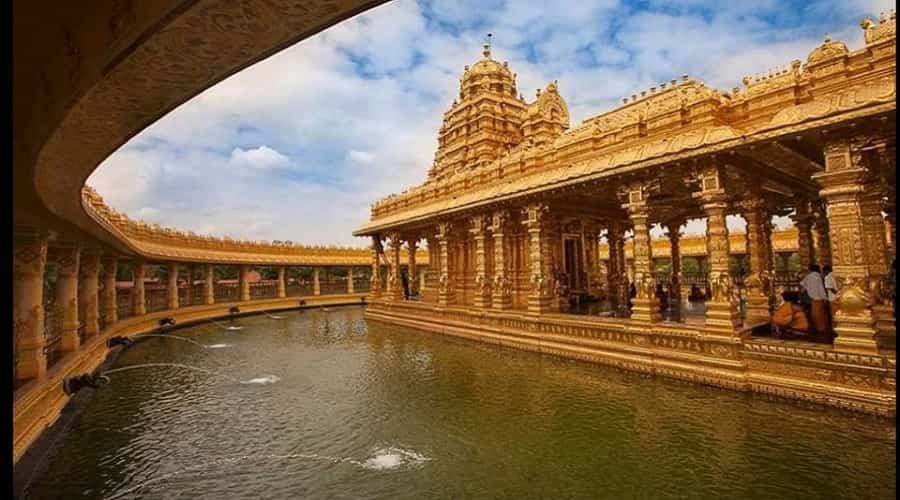
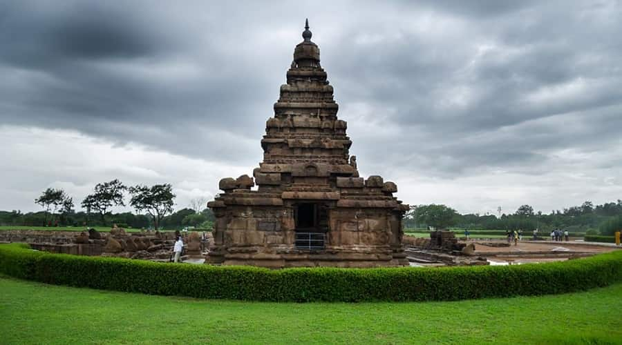

Recent Trips
Here our Recent Trips with Clients

Golden Temple

Shore Temple

choose your Favorite Destination
Here Some Popular Temples around Tamil Nadu
The main temple along with its gopurams is from the early 11th century. The temple also saw additions, renovations, and repairs over the next 1,000 years. The raids and wars, particularly between Muslim Sultans who controlled Madurai and Hindu kings who controlled Thanjavur caused damage. These were repaired by Hindu dynasties that regained control. In some cases, the rulers attempted to renovate the temple with faded paintings, by ordering new murals on top of the older ones. In other cases, they sponsored the addition of shrines. The significant shrines of Kartikeya (Murugan), Parvati (Amman) and Nandi are from the 16th and 17th-century Nayaka era. Similarly the Dakshinamurti shrine was built later. It was well maintained by Marathas of Tanjore.
Arulmigu Meenakshi Sundaraswarar Temple is a historic Hindu temple located on the southern bank of the Vaigai River in the temple city of Madurai, Tamil Nadu, India. It is dedicated to the goddess Meenakshi, a form of Shakti, and her consort, Sundareshwarar, a form of Shiva. The temple is at the center of the ancient temple city of Madurai mentioned in the Tamil Sangam literature, with the goddess temple mentioned in 6th-century-CE texts. This temple is one of the Paadal Petra Sthalams, which are 275 temples of Shiva that are revered in the verses of Tamil Saiva Nayanars of 6th-9th century CE. The west tower (gopuram) of the temple is the model based on which the Tamil Nadu State Emblem is designed.
Arulmigu Dhandayuthapani Swamy Temple is third of the Six Abodes of Murugan (Aarupadai veedugal). It is located in the city of Palani earlier it was known as Thiruaavinankudi(as mentioned in the old Sangam literature Thirumurugatrupadai), Dindigul district, 100 kilometres (62 mi) southeast of Coimbatore and northwest of Madurai in the foothills of the Palani Hills, Tamil Nadu, India. Palani temple is considered synonymous with Panchamritam, a sweet mixture made of five ingredients.
The Isha Yoga Center situated at the foothills of Velliangiri, on the outskirts of Coimbatore, is the headquarters for Isha Foundation. Isha is a sacred space for self-transformation, where you can come dedicate time towards your inner growth. The center offers all four major paths of yoga – kriya (energy), gnana (knowledge), karma (action), and bhakti (devotion), drawing people from all over the world. The Center is dedicated to fostering inner transformation and creating an established state of wellbeing in individuals. The large residential facility houses an active international community of brahmacharis, full-time volunteers and visitors. Isha Yoga Center provides a supportive environment for you to shift to healthier lifestyles, seek a higher level of self-fulfillment and realize your full potential.
Here our Recent Trips with Clients